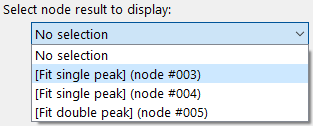
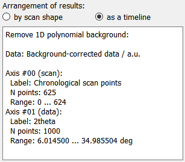

Results from individual nodes can be selected from the drop-down menu. Opening it will show a list of all nodes in the WorkflowTree with stored results (see image below).

Once a node has been selected, additional information for these node’s results will be displayed, see the image to the left.
Result Arrangement#
For some applications, it can be interesting to arrange the results not by scan shape but as a timeline, effictively collapsing all scan dimensions to a single frame index dimension. Changing between the two is done by selecting the corrsponding radio button item. This will also trigger an update of the results metadata, as seen on the image to the left. Note that the first dimension is now labelled Chronological scan points.
Result metadata#
The name of the plugin and the data label and unit are shown at the top of the metadata, followed by descriptions of the different data axes. The axes are labelled with scan or data, depending on whether the respective data axis has been defined in the scan or is an axis from the processed data. In addition, the label (either from the scan definition or from the plugin data dimension) is given with the number of points in this axis and the axis range.
Select plot type#
The user can select between 1-dimensional line plots or 2-dimensional images. Use 1D plot to plot a single line or group of 1D plots to plot multiple lines at once. 2D full axes and 2D data subset will display data in image form.
Result subset selection#

Data selection. In this example, the axes 1 will be used for the line plot. The axis zero is sliced at the index corresponding to the data value 0 and the axis two is sliced at the value 0.#
The Data selection radio buttons allow to toggle the selection of data between data values and axis indices. If axis indices are toggled, integer values must be used for the selection. Data values must be given in the respective unit for each dimension (unit and range are given for each axis in the metadata window). Any data value will be converted to the closest matching index.
Depending on the selection, up to two drop-down menus are shown which allow to select the dimensions to be used in the plot. In addition, the slice points for additional dimensions must be specified (either as index or data value) to show the correct data subset. Multiple selections are possible when items are separated by commas. Ranges can be selected following the Python slicing syntax. Any duplicate entries will be discarded.
example |
python equivalent |
description |
|---|---|---|
1,2,4,5 |
[1, 2, 4, 5] |
The four individual points 1, 2, 4, 5 will be used. |
1:5 |
slice(1, 5) |
The slice includes all the values from 1..4 (note that the end point is not included). |
1,2,1:8:2 |
[1, 2, slice(4, 10, 2)] |
The numbers 1, 2 and a slice object which takes every second value from 3 to 10, i.e. 3, 5, 7, 9. |
: |
slice(0, n) |
The slice of the full dimension. |
Tip
The default data dimensions are zero (and one in case of a 2D image) and the default slices are all zero. These values usually need to be modified to show a useful plot or image.
Confirmation#
The “Confirm selection” button will process the inputs given above and will select the corresponding data subset and pass it to the plot widget.